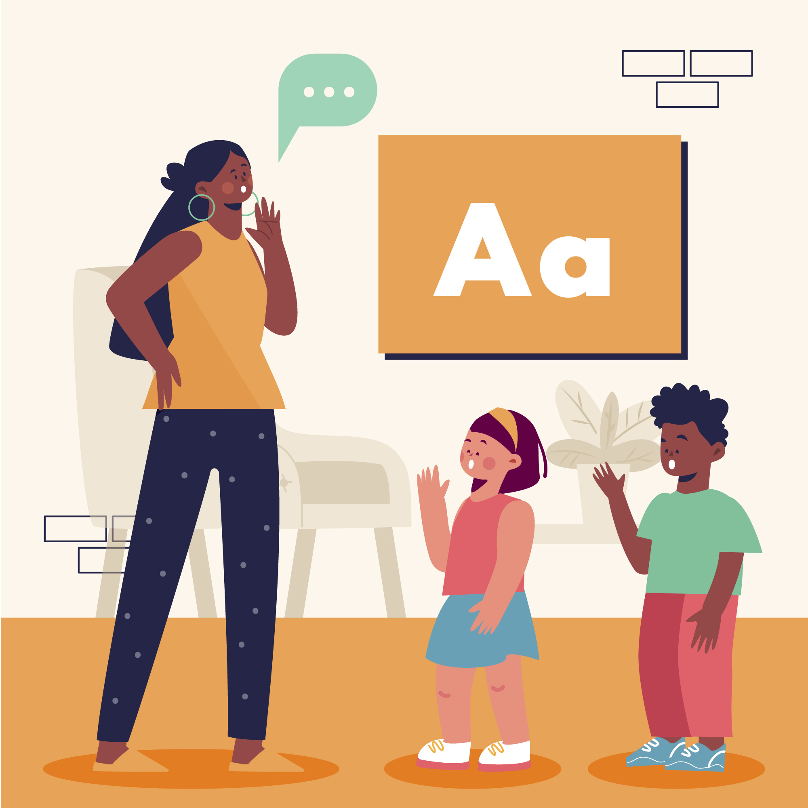

¿Qué es un trabalenguas?
Los trabalenguas son oraciones de textos pequeños que se pronuncian con cierta dificultad. Los trabalenguas suelen contener palabras con una secuencia de sonidos que riman entre ellos, por ejemplo:"Pablito clavó un clavito en la calva de un calvito. En la calva de un calvito, un clavito clavó Pablito. Pablito clavó un clavito. ¿Qué clavito clavó Pablito?"
De igual manera los trabalenguas sirven para aprender un nuevo idioma y como un ejercicio para la pronunciación en los niños.
Características de los trabalenguas
Ejemplos de trabalenguas